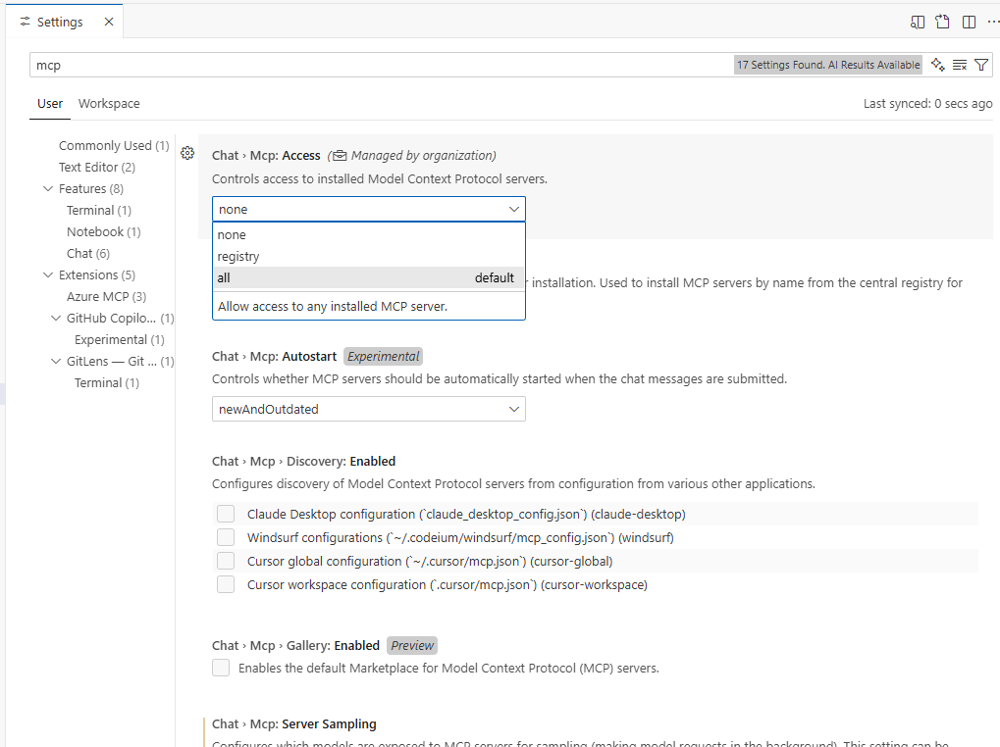

IDE and client configuration#
PyMAPDL-MCP can be integrated with multiple MCP-compatible tools. This page explains configuration for the most popular clients.
Claude Code#
Claude Code is Anthropic’s code editor with built-in MCP support. You can add PyMAPDL-MCP using the command-line tool.
Set up PyMAPDL-MCP for a specific project (recommended)#
Configure PyMAPDL-MCP for a specific project:
cd my-project
claude mcp add --transport stdio pymapdl -- uvx --from git+https://github.com/ansys/pymapdl-mcp ansys-mapdl-mcp
Advantages
Provides project-specific configuration.
Enables sharing with team members via version control.
Simplifies maintenance of multiple configurations per project.
Supports collaborative teams.
Set up PyMAPDL-MCP globally#
Configure PyMAPDL-MCP for all your Claude Code projects:
claude mcp add --transport stdio --scope user pymapdl -- uvx --from git+https://github.com/ansys/pymapdl-mcp ansys-mapdl-mcp
Advantages
Makes PyMAPDL-MCP available across all your Claude Code projects.
Requires no per-project configuration.
Works well for personal development workflows.
Key features
Uses STDIO transport by default (local integration).
Uses uvx for automatic fetching from GitHub.
Requires no manual management of configuration files.
Provides full MCP protocol support.
Documentation
See Claude Code MCP installation documentation.
Visual Studio Code#
Visual Studio Code integrates MCP servers through the Copilot extension using a JSON configuration file.
Start quickly from GitHub#
Add this code to the .vscode/mcp.json file in your project directory:
{
"servers": {
"pymapdl": {
"type": "stdio",
"command": "uvx",
"args": [
"--from",
"git+https://github.com/ansys/pymapdl-mcp",
"ansys-mapdl-mcp"
]
}
}
}
Features
Uses STDIO transport (recommended for local development).
Fetches the latest version from GitHub.
Requires uvx to be installed on your system.
Set up for local development#
Use this code for development or testing with local source code:
{
"servers": {
"pymapdl": {
"type": "stdio",
"command": "./.venv/bin/python",
"args": ["-m", "ansys.mapdl.mcp"],
"env": {
"FASTMCP_LOG_LEVEL": "DEBUG"
}
}
}
}
Features
Uses a local Python virtual environment.
Enables debug logging for troubleshooting.
Works well for development and testing.
Requires
pip install -e .in your virtual environment.
Use uv as an alternative#
If you prefer, you can use uv as your Python package and project manager:
{
"servers": {
"pymapdl": {
"type": "stdio",
"command": "uv",
"args": ["run", "python", "-m", "ansys.mapdl.mcp"]
}
}
}
Configure HTTP transport#
For remote access or web-based clients:
{
"servers": {
"pymapdl": {
"type": "http",
"url": "http://127.0.0.1:8080"
}
}
}
Important: with HTTP transport, you must start the server separately in a terminal:
# Basic HTTP server
python -m ansys.mapdl.mcp --transport http
# Custom host and port
python -m ansys.mapdl.mcp --transport http --http-host 0.0.0.0 --http-port 9000
# With CORS for web clients
python -m ansys.mapdl.mcp --transport http --cors-origins "http://localhost:3000"
Enable MCP in Visual Studio Code#
Open Visual Studio Code settings (
Ctrl+,orCmd+,).Search for
MCPorCopilot MCP.Enable the setting to allow Copilot to use MCP servers.
Restart Visual Studio Code for changes to take effect.
This image shows Visual Studio Code settings for enabling MCP servers:

Project-level:
.vscode/mcp.jsonfile in the repository root.Global: Visual Studio Code user settings (auto-discovered).
Workspace:
.vscode/mcp.jsonfile for workspace-specific configuration.
See Visual Studio Code MCP Servers documentation.
Claude Desktop#
Claude Desktop is Anthropic’s macOS desktop app with full MCP support. To configure
Claude Desktop, edit the ~/Library/Application Support/Claude/claude_desktop_config.json file:
{
"mcpServers": {
"pymapdl": {
"command": "uvx",
"args": [
"--from",
"git+https://github.com/ansys/pymapdl-mcp",
"ansys-mapdl-mcp"
],
"description": "MCP server for Ansys MAPDL through PyMAPDL",
"version": "0.0.1",
"language": "python"
}
}
}
Features
Provides automatic server detection and initialization.
Uses STDIO transport by default.
Supports full MCP tool discovery.
Documentation
See Claude Desktop MCP Configuration documentation.
General MCP clients#
Any MCP-compatible client can use PyMAPDL-MCP. The basic requirement is STDIO or HTTP transport support.
STDIO transport (recommended)#
For local clients on the same machine:
# Start the server
python -m ansys.mapdl.mcp --transport stdio
Or to use uvx:
uvx --from git+https://github.com/ansys/pymapdl-mcp ansys-mapdl-mcp
HTTP transport#
For remote clients or web-based clients:
# Start the server with HTTP
python -m ansys.mapdl.mcp --transport http --http-host 0.0.0.0 --http-port 8080
# Configure your client to connect to
# http://[server-ip]:8080
Claude Code versus Visual Studio Code#
Feature |
Claude Code |
Visual Studio Code |
|---|---|---|
Configuration method |
CLI command ( |
JSON file ( |
Setup level |
Project or global ( |
Project-level only |
Manual configuration |
None (auto-managed by CLI) |
Manual JSON editing required |
Transport support |
STDIO (default) |
STDIO or HTTP |
Integration |
Built-in MCP support |
Requires Copilot extension |
Team sharing |
With project configuration files |
With |
Learning curve |
Low (CLI-based) |
Medium (JSON configuration) |
Advanced configuration#
Connect to remote MAPDL instances#
Both Visual Studio Code and Claude Code support connecting to remote MAPDL instances.
Visual Studio Code (STDIO):
{
"servers": {
"pymapdl": {
"type": "stdio",
"command": "./.venv/bin/python",
"args": [
"-m", "ansys.mapdl.mcp",
"--connect-on-startup",
"--ip", "192.168.1.100",
"--port", "50053"
]
}
}
}
Claude Code:
claude mcp add --transport stdio pymapdl -- \
python -m ansys.mapdl.mcp \
--connect-on-startup \
--ip 192.168.1.100 \
--port 50053
Enable debug logging#
Enable debug output for troubleshooting:
Visual Studio Code:
{
"servers": {
"pymapdl": {
"type": "stdio",
"command": "./.venv/bin/python",
"args": ["-m", "ansys.mapdl.mcp"],
"env": {
"FASTMCP_LOG_LEVEL": "DEBUG"
}
}
}
}
Command line:
FASTMCP_LOG_LEVEL=DEBUG python -m ansys.mapdl.mcp
Integrate with Docker#
For containerized deployments with HTTP transport:
Visual Studio Code:
{
"servers": {
"pymapdl": {
"type": "http",
"url": "http://localhost:8080"
}
}
}
Start the container:
docker run -p 8080:8080 \
-e PYMAPDL_IP=host.docker.internal \
pymapdl-mcp
For information about deployment options, see Overview.
Next steps#
To learn about available tools, see Tools and capabilities.
For a complete API reference, see The ansys.mapdl.mcp library.
For practical usage examples, see Examples.